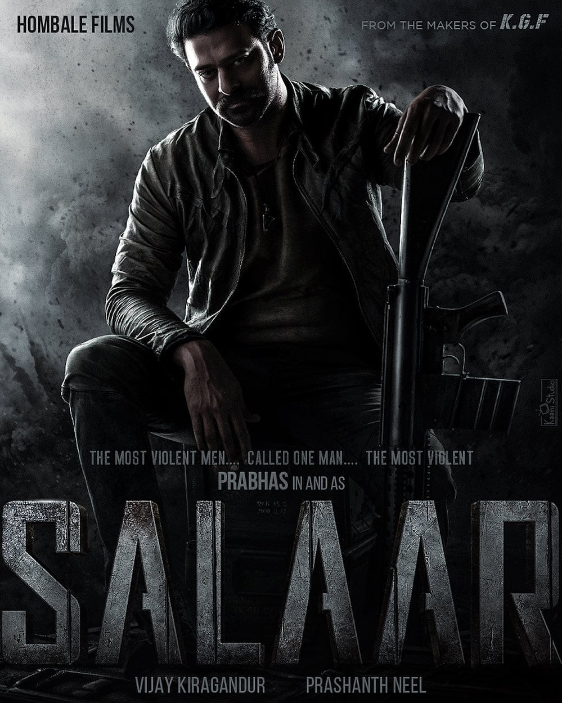

movie1

Animal is a 2023 Indian Hindi-language action drama film[5] directed and edited by Sandeep Reddy Vanga,
who also co-wrote the screenplay with Pranay Reddy Vanga and Saurabh Gupta. The film is produced by
Bhushan Kumar, Pranay Reddy Vanga, Krishan Kumar and Murad Khetani under T-Series Films, Bhadrakali
Pictures and Cine1 Studios. The film stars Ranbir Kapoor, Anil Kapoor, Bobby Deol, Rashmika Mandanna
and Tripti Dimri. In the film, Ranvijay "Vijay" Singh learns about an assassination attempt on his father
and sets out to exact revenge.
movie2
Hi Nanna (transl. Hi Dad) is a 2023 Indian Telugu-language romantic drama film directed
by Shouryuv in his directorial debut. The film stars Nani and Mrunal Thakur in the lead
roles, alongside Kiara Khanna, Priyadarshi Pulikonda, Angad Bedi, Jayaram and Viraj Ashwin
in supporting roles. The music was composed by Hesham Abdul Wahab, while the cinematography
and editing were handled by Sanu Varghese and Praveen Anthony.
movie3

The film's initial story was pitched from Neel's debut film Ugramm (2014)[5] and is the maiden
part of a two-part film. It was officially announced in December 2020 under the title Salaar,
however, in July 2023, the official title was announced as Salaar: Part 1 – Ceasefire. Principal
photography commenced in January 2021, and occurred sporadically in several legs over nearly
three years, before wrapping in late 2023. Filming locations included Telangana, Italy and Budapest.